从一句需求到一段成片：薄切片 01 做了什么，学到了什么
我们用"开培养箱取六孔板，送到观察站"这一个工艺步骤，把"需求 → 方案 → 建模 → 仿真 → 渲染"整条流程完整走了一遍。这一页把每一步做了什么、哪里出了问题、最后固定下来哪些做法讲清楚，方便你学习和复用。
01一分钟看懂
如果只看一节，就看这一节。
- 问题最大的是仿真阶段，但根子在更早的阶段。14 次返工里有 9 次是运动学可行性问题，比如夹爪行程不够、门扫到底座、放板够不着。它们和动力学无关，本可以在方案预览时用方盒代理和 IK 查出来。所以流程里新增了运动学预演。
- "可控"靠的是冻结的门限和验证门。每个阶段都有一条命令判 PASS / FAIL，门限在 plan 阶段就写死在
thresholds.json里。测量代码有 bug 就改代码，不改门限。负例 N3 没触发，就如实判 FAIL，不去改它的定义。 - 产出要匹配用途。成片是给工程审阅看动作和干涉的，720p、16 采样加降噪就够了。展示级画质要多花 25 倍算力，只有在用户要求时才用。
各阶段验证门现状
| 阶段 | 验证门 | 说明 |
|---|---|---|
| 需求访谈 | PASS | 需求记录六节齐全 |
| 方案预览 | PASS | 8 节、图片全是 WebP、设备 / 步骤 / 参考三张表可解析；审批点①通过 |
| plan | PASS | 任务可勾选、门限带编号且已冻结、没有时间预估 |
| 参考图 | PASS | 5 张图都已查看，尺寸逐项标了来源，有载荷链图；审批点②通过 |
| 建模 | PASS | M1–M6：GLB 里没有碰撞代理，隔板高度、静置 1 s 稳定等 |
| 仿真 | FAIL | 名义流程 S1–S13 全部 PASS；负例 N1、N2 按预期触发，N3 没有触发（见 #7） |
| 位姿绑定与渲染 | PASS | V1–V4：无碰撞代理、帧数等于仿真时长 × 30、位姿误差为 0、成片可解码 |
02成片：54 秒里发生了什么
画面里的每一个动作都来自 MuJoCo 物理仿真，Blender 只负责把每一帧的刚体位姿画出来，没有手动打关键帧。
播放的是本机 D:\Projects\Robots\projects\cell-passaging-slice-01\07-render\film.mp4。如果浏览器拦截了本地视频，可以直接打开这个文件，或在 HF 上看：world-building-projects / 07-render / film.mp4（私有，需登录）。
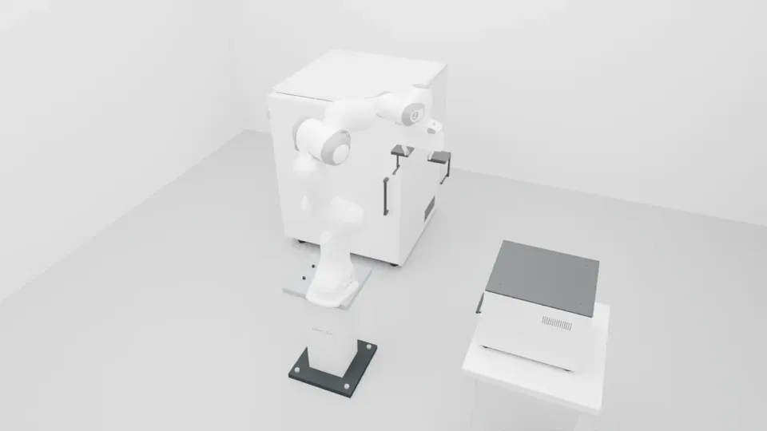
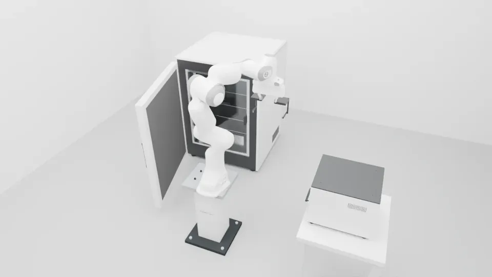
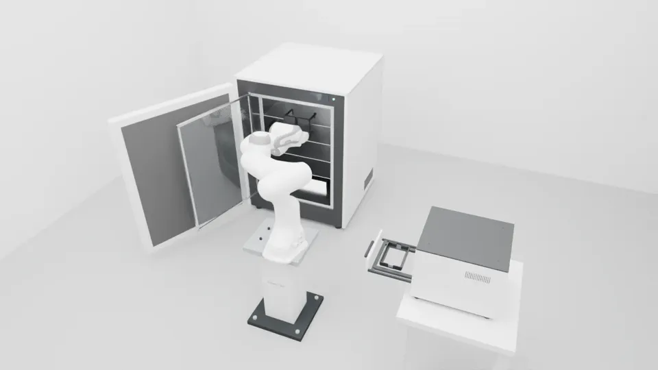
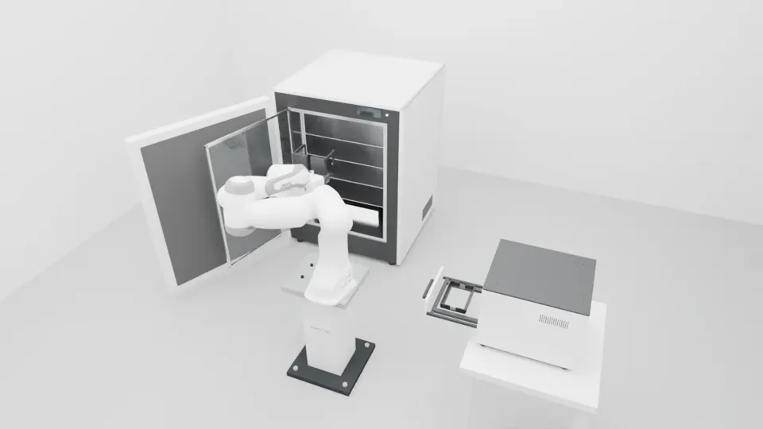
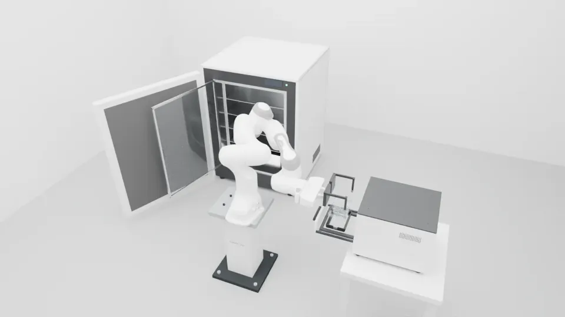
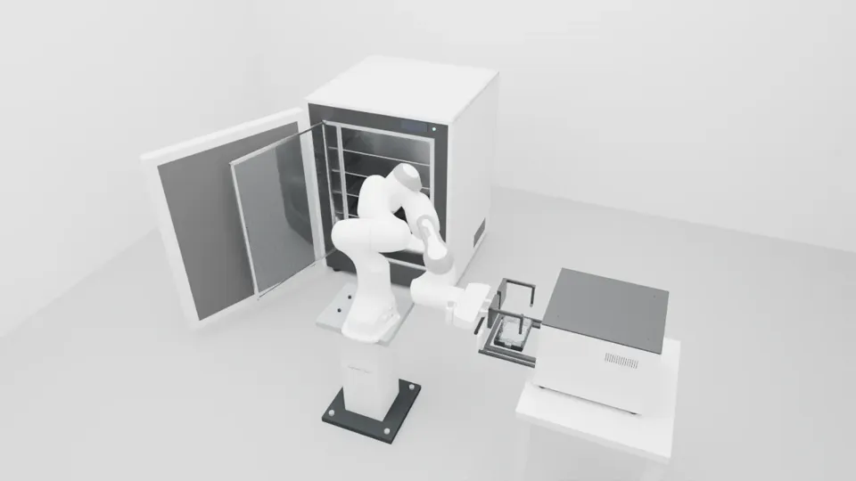
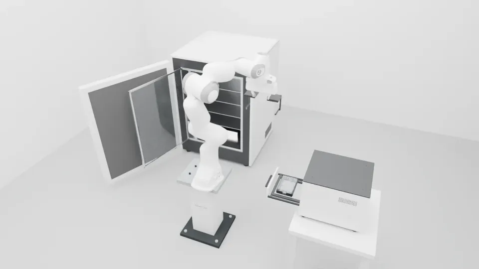
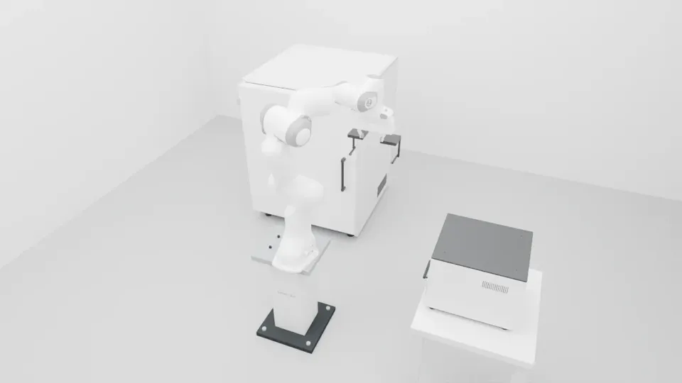
03流程地图
7 个阶段，用户只在两个审批点出场，其余由 agent 自主推进。每个阶段都要经过同样的四个动作才算完成。
每个阶段固定的四个动作
- 阶段说明：先讲清输入、要做什么、怎么算完成、最可能出什么问题。
- 产物：放在项目的阶段目录下，比如
06-simulation/。 - 验证门：
uv run --extra sim wb gate <项目> <阶段>判 PASS。 - 阶段日志 + 经验记录：只记实测数据，并更新
docs/lessons/。
关键术语
- 薄切片：只做一个工艺步骤，但从需求一路走到成片。
- 验证门：一条命令给出 PASS / FAIL / NOT_RUN / BLOCKED / IDEALIZED。
- 门限冻结：plan 阶段写死数值，之后只拿结果对照，不放宽。
- 负例：故意制造危险，验证门必须判 FAIL，用来证明门限真的有效。
- 理想化：仿真里做了简化的部分，必须明确标注，比如底座固定在世界坐标。
数据怎么从一个阶段流到下一个阶段
design.py → design.json（唯一参数源）→ 同时生成 incubator.blend / .glb（视觉）和 incubator.xml（物理）→ MjSpec 把培养箱、Panda、观察站、六孔板装配成场景 → 仿真按 30 fps 记录每个 body 的位置和四元数，存进 states_30fps.npz → Blender 里每个视觉根对象对应一个 MuJoCo body，逐帧写入位姿 → Cycles 渲染每一帧 → ffmpeg 编码成 film.mp4。
04逐阶段走一遍
每个阶段一张卡：做了什么、产出了什么、卡在哪里、最该记住的一条。
- 做了什么
- 分轮提问，每问都附推荐答案；能查到的事实（资产能否编译、硬件、历史场景能否复现）先由子代理查清。
- 产物
requirements.md：目标、不做什么、工艺步骤、设备、保真度、算力预算六节。- 卡点
- 我推荐的"先用原装手指"后来被证明是错的：原装夹爪行程只有 80 mm，六孔板宽 85.5 mm。
审批点①
- 做了什么
- 一页 HTML 讲清设备、布局、工艺步骤和难度；生成 3 张概念图；用 IK 初筛取板层位是否够得到。
- 产物
02-proposal/index.html，已发布到仓库proposals/。- 卡点
- 第一版把尺寸、夹爪交给你确认，还写了时间预估，都被你纠正了。另外 IK 只查了"点位能否到达"，没查工具几何和设备扫掠范围，这是后面仿真返工的根源。
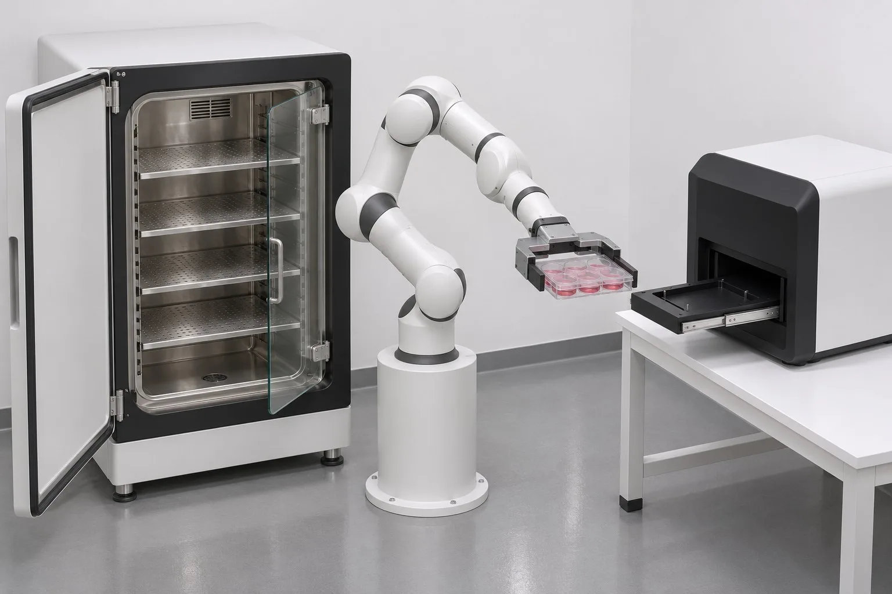
- 做了什么
- 按阶段列出可勾选的任务；冻结带编号的门限（S1–S13、M1–M6、V1–V4）和负例 N1–N3，同时写进
thresholds.json。 - 卡点
- N3"盖的摩擦设为零"在设计时没确认危险是否真的可能发生，到了仿真阶段才发现它触发不了。
审批点②
- 做了什么
- 生成 5 张新部件参考图；写尺寸表，每项标明来源类别（标准锚点 / 设计假设 / 实测）；画载荷链图。
- 卡点
- 生成图自作主张画了 5 层隔板。这里没有重新生成，只在
reference.json里注明差异。
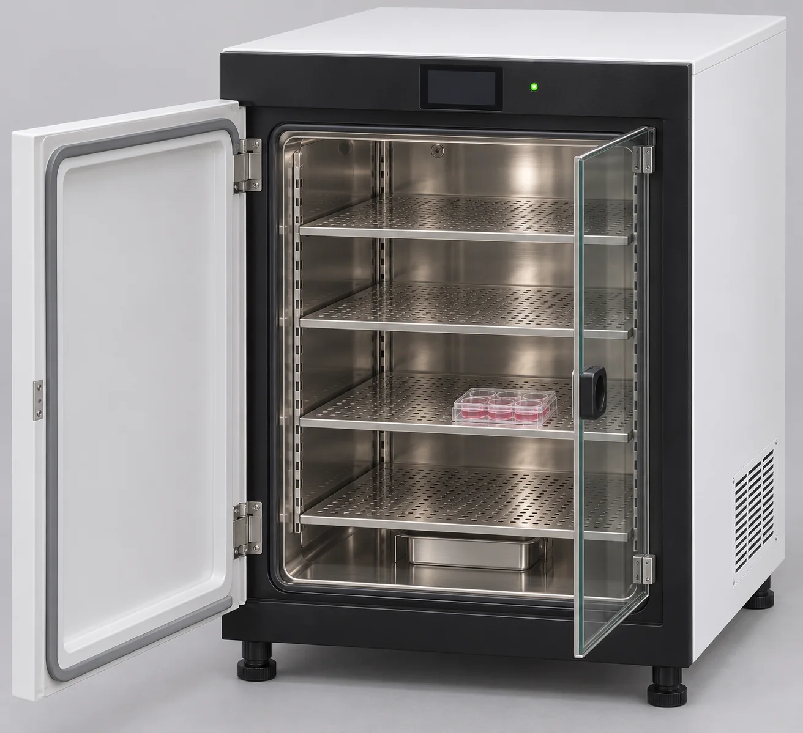
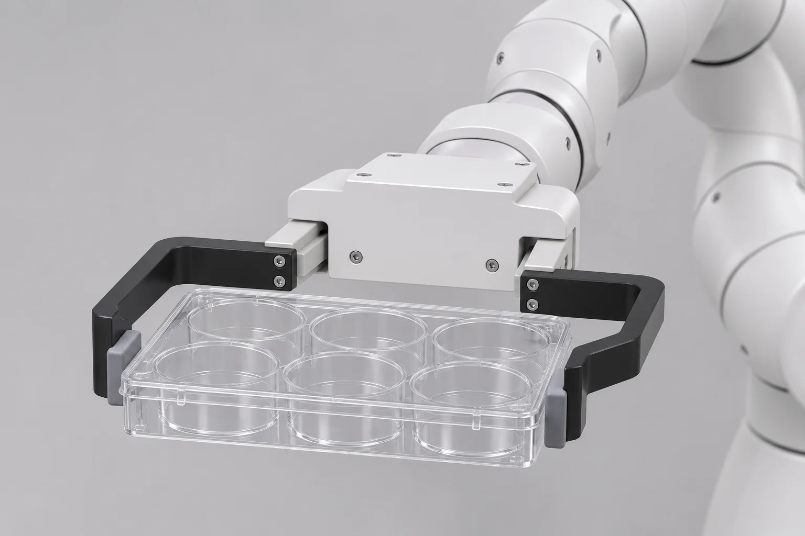
- 做了什么
design.py是唯一参数源，同时生成 Blender 模型、GLB 和 MJCF。命名约定是ROOT_/VIS_/COL_，导出时按白名单只选视觉对象。- 卡点
- 干涉核查推翻了两个尺寸：指尖前伸要加长，观察站托槽侧墙要开 20 mm 的槽。Blender 5.4 的 API 差异导致 2 次脚本报错。
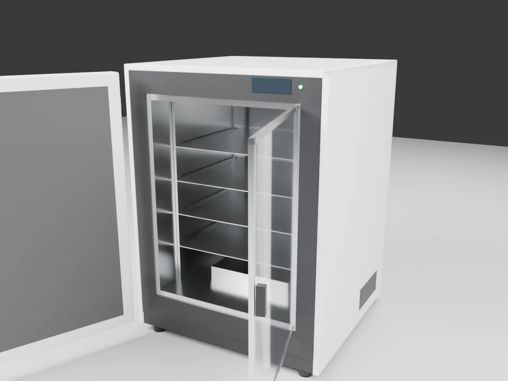
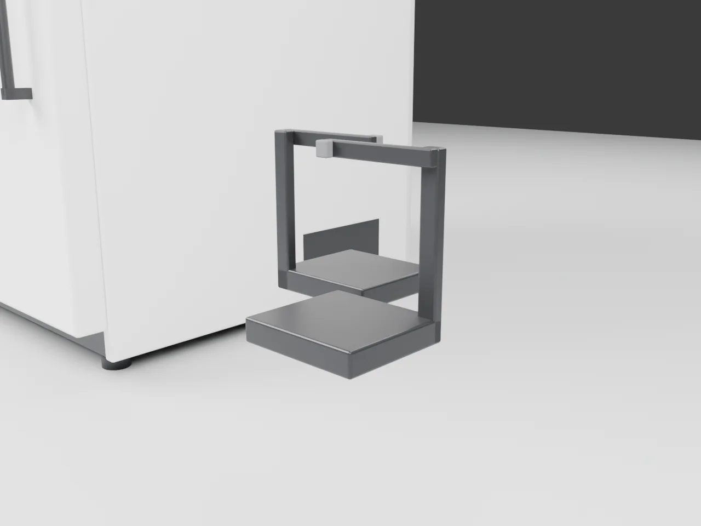
FAIL（N3）
- 做了什么
- 用 MjSpec 装配场景，规划机械臂轨迹，先做运动学初筛，再跑 54 s 的动力学（timestep 0.5 ms，每次约 120 s 墙钟），然后跑名义流程和 3 个负例。
- 结果
- 名义流程 S1–S13 全部 PASS：穿透 0.09 mm，禁止接触 0 次，盖相对板滑移 0.18 mm，支撑力是载荷的 20.9 倍。负例 N1、N2 按预期触发，N3 没有触发。
- 卡点
- 几何、布局、控制、接触数值四类问题叠在一起，名义流程连续 7 次 FAIL 才通过。详见第 05 节。
- 做了什么
- 按白名单导入视觉资产，每个视觉根对象对应一个 MuJoCo body，逐帧写入位姿；先渲几帧调曝光和机位，再渲全片，编码后运行验证门。
- 卡点
- 一开始用了展示级画质，全片要约 6 h，被你叫停（第 07 节）。收尾脚本用
pgrep -f判断渲染是否结束，结果匹配到了自己的父进程，一直在等。
05问题最大的阶段：仿真
按返工次数排序，仿真一个阶段的返工比其他所有阶段加起来还多。
各阶段返工次数
建模阶段的指具设计在仿真阶段又改了 3 次，这 3 次计入仿真。
仿真阶段的 14 次返工，按问题类别
另有 2 次是测量代码的 bug（S8 的目标点、S11 的统计范围），改的是代码，门限没动，不计入返工。
| 类别 | 具体问题 | 怎么解决的 |
|---|---|---|
| 几何 / 设计 | 原装指尖和连接件撞到观察站抽屉前面板（比板底高 44 mm） | 偏置宽指改成下沉式，指垫比手掌低 70 mm；下垂腿外移，给定位墙留出 4.4 mm 余量 |
| 几何 / 设计 | 内玻璃门右铰链，开门后横在机器人一侧 | 改为左铰链 |
| 布局 | 外门宽 0.7 m，开合时扫到机器人底座法兰角（P3 原布局就有这个干涉） | 培养箱左移 8 cm |
| 布局 | 放板时手爪要"伸过去再回头"，盖会滑落 | 观察站旋转 −90°，抽屉朝底座伸出，台面降到 0.5 m |
| 控制 | 跟踪滞后约 0.07 rad；TCP 下垂约 4 mm；抽屉稳态误差约 2 mm | 速度前馈、重力补偿、抽屉驱动 kp × 4 |
| 接触数值 | 板在指垫之间慢慢前滑了 6.6 mm（软接触的摩擦蠕变） | noslip_iterations 设为 4，指垫 solref 改为 0.002 |
| 装配 | attach_body 不会带入 <exclude>，门卡在 51.7°；子体继承了 frame 的旋转，板跟着转了 90° | 在场景里显式补上 exclude；板和盖用反向偏航抵消 |
06根因与改进：运动学预演
14 次返工里有 9 次是运动学可行性问题：只要把位姿摆出来就能看到，不需要算力和摩擦。它们却拖到了最贵的动力学阶段才暴露。
这 9 次本可以更早发现
- 夹爪行程比工件尺寸小
- TCP 伸入深度、原装指尖与抽屉前面板之间的空档
- 外门开合时扫到机器人底座
- 放板位置够不着；放板时手爪需要"伸过去再回头"
- 内玻璃门开启后横在机器人一侧
- 子体继承了 frame 的旋转，板长边方向错了
方案预览当时只用 IK 查了点位能否到达，没查工具几何、进出方向、设备扫掠范围。
新增：方案预览阶段的运动学预演
- 所有设备、工件、夹具都用方盒代理，尺寸取自规格书或复用资产。
- 用多初值、带碰撞检查的 IK 求出取、放两个关键位姿，写明进出方向和夹爪张合轴。
- 做两类扫掠：机器人对环境；门、抽屉对静态环境。
- 结论直接决定布局、夹具形式和取放策略，写进"工程决策"一节，交审批点①。
07今天这一步：渲染档位
全片 1621 帧，一开始用展示级画质，每帧约 13.5 s，全片要约 6 h。渲到第 490 帧时你说"没必要"，于是停下来比较了三个档位。
| 档位 | 引擎 | 分辨率 | 采样 | 每帧 | 全片 1621 帧 | 结论 |
|---|---|---|---|---|---|---|
final | Cycles OptiX | 1920×1080 | 128 + 降噪 | 约 13.5 s | 约 6 h | 只在用户要展示片时用 |
draft（默认） | Cycles OptiX | 1280×720 | 16 + 自适应 + OptiX 降噪 | 约 0.6 s | 16.3 min（实测） | 审阅动作和干涉足够 |
eevee | EEVEE | 1280×720 | 16 | 约 0.36 s | — | 玻璃门渲成不透明，挡住箱内，本场景不用 |
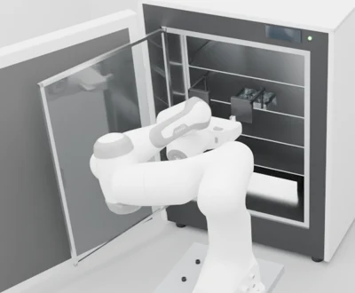
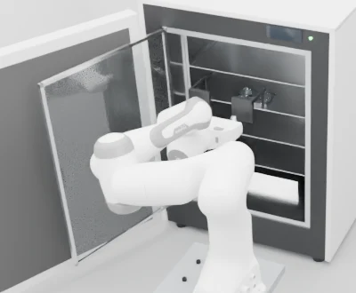
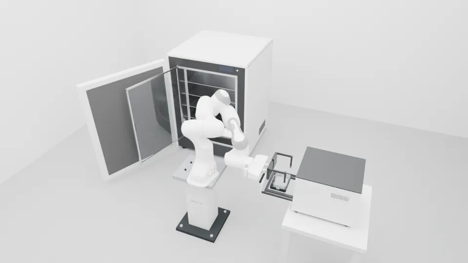
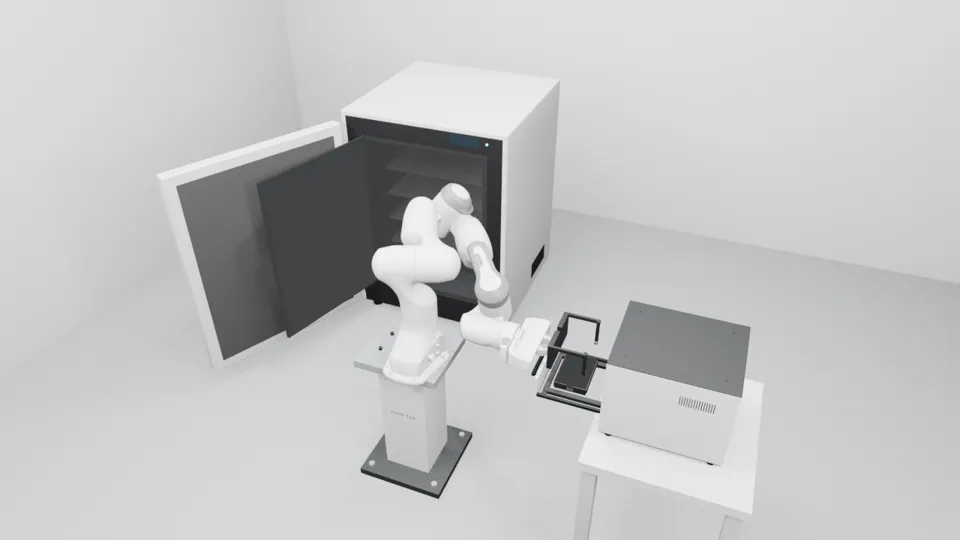
- 先问清楚产出给谁看。审阅用途就用 draft 档位。三个档位只改采样和分辨率，机位、灯光、材质都不变，所以随时可以用
final重渲同一段。 - 后台等待脚本不要用
pgrep -f <脚本名>。它会匹配到父 shell 自己的命令行，永远等不完。要按进程名判断（blender.exe）。
08仿真与渲染速查：症状 → 原因 → 做法
下次遇到同样的症状，先查这张表。
| 症状 | 原因 | 做法 |
|---|---|---|
| 机械臂跟踪滞后约 0.07 rad | Menagerie 位置执行器有 kv 阻尼、没有前馈 | ctrl = q_ref + (kv/kp)·q̇_ref |
| TCP 下垂约 4 mm | 重力没有补偿 | Panda 各 body 设 gravcomp=1 |
| 搬运中板在指垫间前滑 | 软接触的摩擦蠕变 | noslip_iterations=4，指垫 solref 0.002，摩擦 1.0 |
| 夹持穿透超过门限 | 夹持力太大，接触太软 | 夹持力约 18 N 配加硬的指垫；穿透从 1.1 mm 降到 0.09 mm |
| 搬运中盖滑落 | 关节插值让手爪倾斜 | 手爪只允许绕竖直轴转：绕底座竖轴的圆弧加偏航插值 |
| IK 解撞到门，或陷入局部极小 | 单初值 IK | 多初值、带碰撞检查（留 5 mm 裕度），再选离舒适姿态最近的解 |
| 门卡在 51.7° 不动 | attach_body 不带入源文件的 <exclude> | 在场景里显式补上接触排除 |
| 板跟着设备转了 90° | 子 body 继承 frame 的旋转 | 板和盖的四元数用反向偏航抵消 |
| 自定义右手指装反 | Menagerie 的 right_finger 自带绕 z 轴 180° | 右手指零件的 x 坐标取反 |
| 抽屉收回差约 2 mm | 原驱动 kp 偏小，稳态误差大 | kp、kv × 4，forcerange ±40 |
| Windows 版 Blender 读不到脚本 | WSL 的 /tmp 对 Windows 不可见 | 脚本和中间文件放在 /mnt/d |
| V3 位姿对比误报 | q 与 −q 表示同一个旋转 | 夹角取 min(a, 2π−a) |
09已经固定下来的做法
这些都写进了 skill lab-scene-pipeline 和 docs/lessons/，下个项目会直接照做。
和你协作的方式
- 只有两个审批点：方案预览之后、参考图（连同 plan）之后。
- 尺寸、夹具、布局、层位由 agent 决定，写明理由和证据。
- 不写时间预估，只按阶段、步骤、难度组织；日志只记实测。
- 图片用 WebP，页面沿用 spatial-sync 风格。
- 成片不加速、不剪辑；默认用 draft 档位。
工程上的硬规矩
- 门限在 plan 阶段冻结进
thresholds.json，只改测量代码，不改门限。 - 负例要先确认危险在物理上可能发生。
design.py是唯一参数源，视觉和物理都从它生成。- 先物理，后渲染：画面只能来自仿真位姿，不手动打关键帧。
- 先做运动学预演和初筛，再跑动力学。
10自测：看看自己是否真的理解了
先自己想答案，再点开对照。
Q1N3 没有触发，为什么不把门限从 2 mm 调小一点让它触发？
门限是在开工前根据风险定的，目的是判断"盖有没有滑落"。如果为了让负例触发而去改门限，验证门就成了"结果决定标准"，不再可控。N3 失效说明的是负例本身设计错了：盖裙卡在板缘外侧，就算没有摩擦，几何上也滑不出去。所以正确的做法是重新设计负例，比如"盖没扣好"或"外力扰动"（#7）。
Q2为什么搬运段不用关节插值，而用"绕底座竖轴的圆弧"？
关节插值时，中间姿态的手爪方向不受控制，会倾斜，自由放在板上的盖就会滑落。圆弧加偏航插值保证手爪只绕竖直轴转，板始终保持水平。
Q3"外门扫到机器人底座"这个问题，在新流程里应该在哪一步被发现？
方案预览阶段的运动学预演：门、抽屉对静态环境的扫掠检查。只需要方盒代理和门的转角范围，不用等到建模和动力学。
Q4板在指垫之间慢慢前滑 6.6 mm，第一反应应该是加大摩擦吗？
不应该。原因是软接触的摩擦蠕变，这是数值问题，不是摩擦系数不够。做法是开 noslip_iterations，并给夹持接触用更硬的 solref。单纯加大夹持力还会让穿透超出门限。
Q5什么时候该用 final 档位渲染？
只有在用户明确要展示级画质时才用，比如对外展示或汇报。工程审阅只需要看清动作和干涉，draft 档位就够了，而且快约 25 倍。档位不影响机位和动作，所以随时可以重渲。
Q6为什么视觉模型和物理模型要从同一个 design.json 生成？
只要有两份手工维护的几何，迟早会对不上：画面里没撞，仿真里撞了，或者反过来。只有一个参数源，改一处，两边同时更新。P1-B 用了 13 个脚本、86 个文件，本项目只用 4 个脚本、15 个文件。
11遗留问题与下一步
遗留问题
- 负例 N3 需要重新设计（#7），仿真验证门目前判 FAIL。
- 偏置宽指、观察站开槽、布局调整都只在仿真中验证过，没有做强度、制造或真实硬件验证。
- 机器人底座是理想化处理：固定在世界坐标，接触面积为 0。
建议的下一步
- 修复 N3，让薄切片 01 的验证门全部 PASS。
- 把运动学预演做成
wb命令，供所有项目复用。 - 用新 skill 跑薄切片 02（建议"送进生物安全柜"），看仿真返工能不能从 14 次降到个位数。